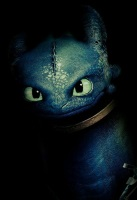
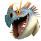

Беззубик є одним з найрозумніших з усіх існуючих драконів, а почуттям гумору дуже нагадує Іккінга. Він негативно реагує на будь-які загрози, спрямовані на нього і його друзів. Зазвичай цей дракон дуже грайливий і любить побалуватися. Також він дуже цікавий.

Денна Фурія - це маловідомий і вкрай рідкісний вид драконів. Є окремим видом, хоча вони і схожі на Нічну фурію; досить сильний і красивий дракон, що належить класу: «Разючі».Денні Фурії, мабуть, один з найпрекрасніших і красивих видів драконів. Особливо виділяється білим мерехтливим забарвленням, світло-блакитними очима і абсолютно гладкою лускою, як ніби посипаної маленькими блискітками.
Страшний Жах - це маленький, стайний, енергійний і товариський дракон, який належить до класу: «Кочегари». Швидше за все, їх прототипом є книжковий Беззубик. Моторошні остраху досить сильно поширені в природі. Їх часто можна зустріти на різних островах архіпелагу.
У Громгільди досить доброзичливий характер. Громгільда є вірним і люблячим по відношенню до Астрід драконом. Вона, також, здається, занадто любить Іккінга. Хоч вона дуже красива, але не настільки, як небезпечна.Як і всі Злісні Змійовики, Громгільда дуже красивий дракон і, на жаль, вона це знає. Вона має щедру дозу марнославства, яке характерно для її виду.
Сарделька - мила і добра самка Громмеля. Вона дуже любить Рибьенога. Завдяки їй на йолопи зробили багато зброї з "Заліза Громелля". Зі своїм господарем любить грати в овцебол. А ще любить лизати п'яти Рибьенога перед сном. У неї смішне ім'я через хвоста який товщий ніж у інших Громелей.
Беззубик є одним з найрозумніших з усіх існуючих драконів, а почуттям гумору дуже нагадує Іккінга. Він негативно реагує на будь-які загрози, спрямовані на нього і його друзів. Зазвичай цей дракон дуже грайливий і любить побалуватися. Також він дуже цікавий.


Іккінг
Іккінг - природжений винахідник, конструктор і чудовий майстер, також має непогані навичками фехтування. На противагу своєму батькові і іншим вікінгам, він слабкий фізично, але розумний і, незважаючи на миршавий вигляд, вміє боротися зі страхом, що багато разів його виручало.
стрід
Астрід - саме втілення духу вікінгів. Вона розумна, рішуча і красива, її важко здивувати в силу її твердого характеру. Володіє неприборканим і незалежною вдачею. Під час підготовки до боротьби з драконами вона бажає тренуватися одна, але її гординя і запальність не завжди приносять удачу. Коли на тренуваннях Іккінга успішно приборкує драконів новим способом, не схожим на той, до якого звикли в племені, Астрід заздрить. Вона дуже любить свого дракона.
-

Беззубик
Беззубик є одним з найрозумніших з усіх існуючих драконів, а почуттям гумору дуже нагадує Іккінга. Він негативно реагує на будь-які загрози, спрямовані на нього і його друзів. Зазвичай цей дракон дуже грайливий і любить побалуватися. Також він дуже цікавий.
-

Фурія
Денна Фурія - це маловідомий і вкрай рідкісний вид драконів. Є окремим видом, хоча вони і схожі на Нічну фурію; досить сильний і красивий дракон, що належить класу: «Разючі».Денні Фурії, мабуть, один з найпрекрасніших і красивих видів драконів. Особливо виділяється білим мерехтливим забарвленням, світло-блакитними очима і абсолютно гладкою лускою, як ніби посипаної маленькими блискітками.
-

Страшний Жах
це маленький, стайний, енергійний і товариський дракон, який належить до класу: «Кочегари». Швидше за все, їх прототипом є книжковий Беззубик. Моторошні остраху досить сильно поширені в природі. Їх часто можна зустріти на різних островах архіпелагу.
-

Гвинтокрил
У Громгільди досить доброзичливий характер. Громгільда є вірним і люблячим по відношенню до Астрід драконом. Вона, також, здається, занадто любить Іккінга. Хоч вона дуже красива, але не настільки, як небезпечна.Як і всі Злісні Змійовики, Громгільда дуже красивий дракон і, на жаль, вона це знає. Вона має щедру дозу марнославства, яке характерно для її виду.
-
Гвинтокрил

Сарделька - мила і добра самка Громмеля. Вона дуже любить Рибьенога. Завдяки їй на йолопи зробили багато зброї з "Заліза Громелля". Зі своїм господарем любить грати в овцебол. А ще любить лизати п'яти Рибьенога перед сном. У неї смішне ім'я через хвоста який товщий ніж у інших Громелей.